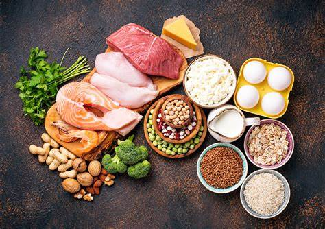
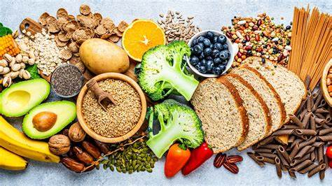
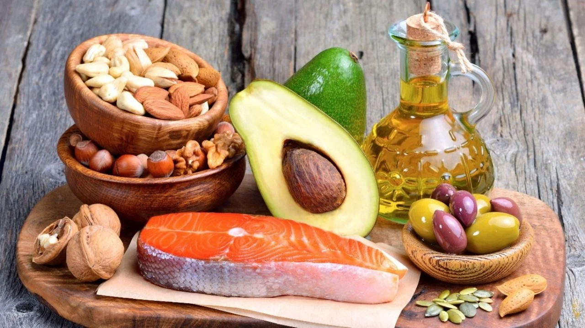
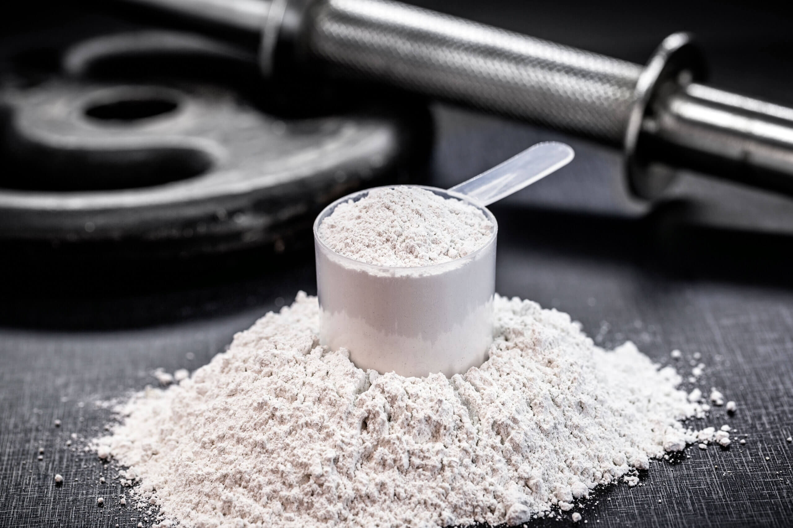
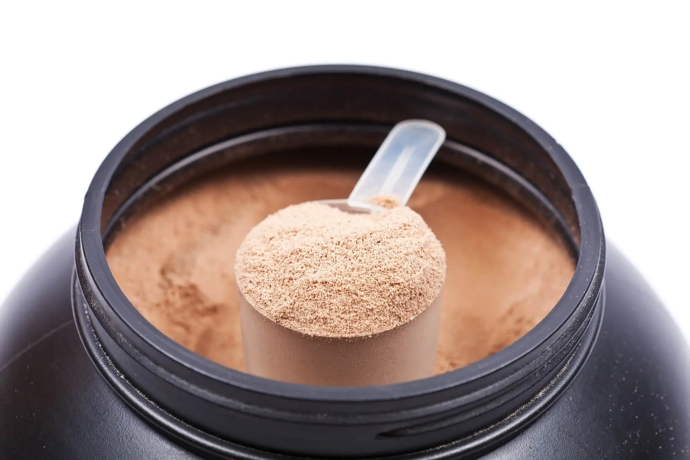
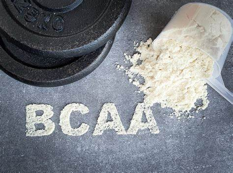
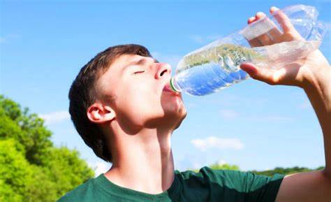

Nutrición y músculos

Proteínas
Fundamentales para reparar y construir tejido muscular.
Fuentes principales:
- Carnes magras
- Pescado
- Huevos
- Legumbres
- Lácteos
Dosis recomendada:
1.6–2.2 g/kg/día

Carbohidratos
Proveen energía para el entrenamiento y recuperación muscular.
Fuentes principales:
- Arroz integral
- Pasta integral
- Avena
- Patatas

Grasas saludables
Importantes para hormonas anabólicas.
Fuentes principales:
- Aguacate
- Frutos secos
- Aceite de oliva
Micronutrientes esenciales
| Nutriente | Función | Fuentes |
|---|---|---|
| Magnesio | Contracción muscular | Verduras de hoja verde, nueces |
| Calcio | Función muscular | Lácteos, sardinas |
| Potasio | Previene calambres | Plátanos, patatas |
Suplementos (opcional)

Creatina
Mejora la fuerza y el crecimiento muscular.
5g/día
Proteína en polvo
Útil para alcanzar el requerimiento proteico diario.
20-30g/toma
BCAA
Ayudan en la recuperación muscular.
5-10g/díaHidratación
Mantenerse bien hidratado es clave para el buen funcionamiento muscular y para prevenir lesiones.
Recomendaciones:
- 2-3 litros de agua al día
- Aumentar ingesta durante el ejercicio
- Monitorear el color de la orina
